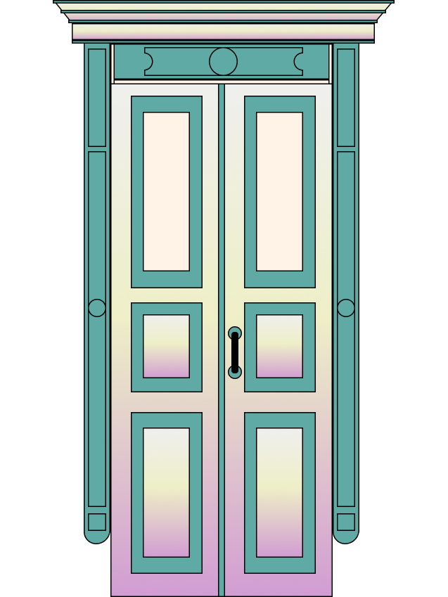
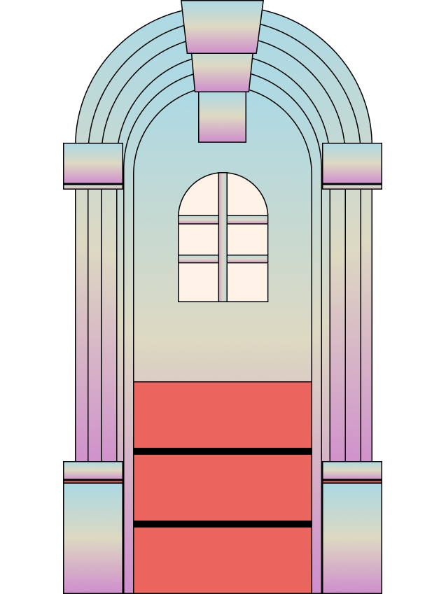
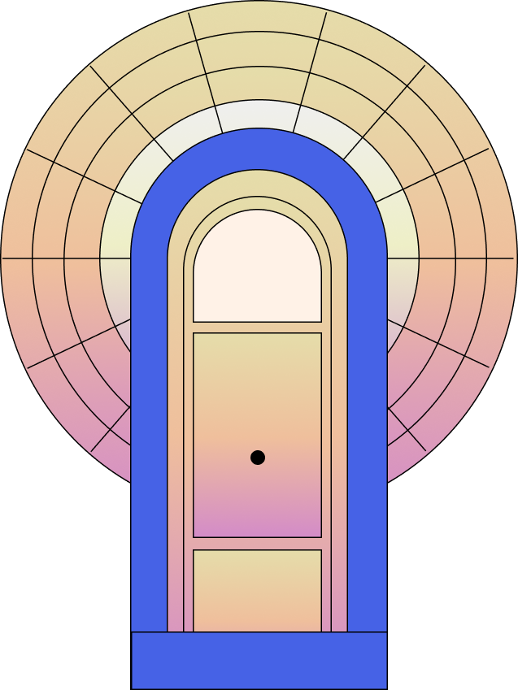
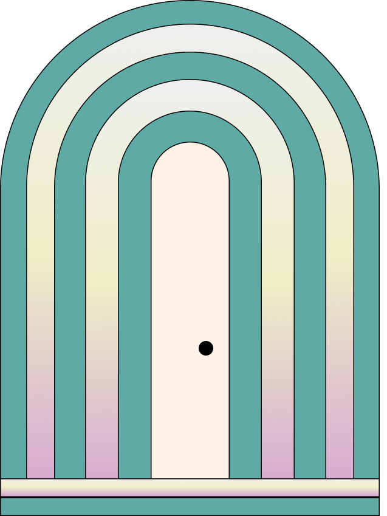
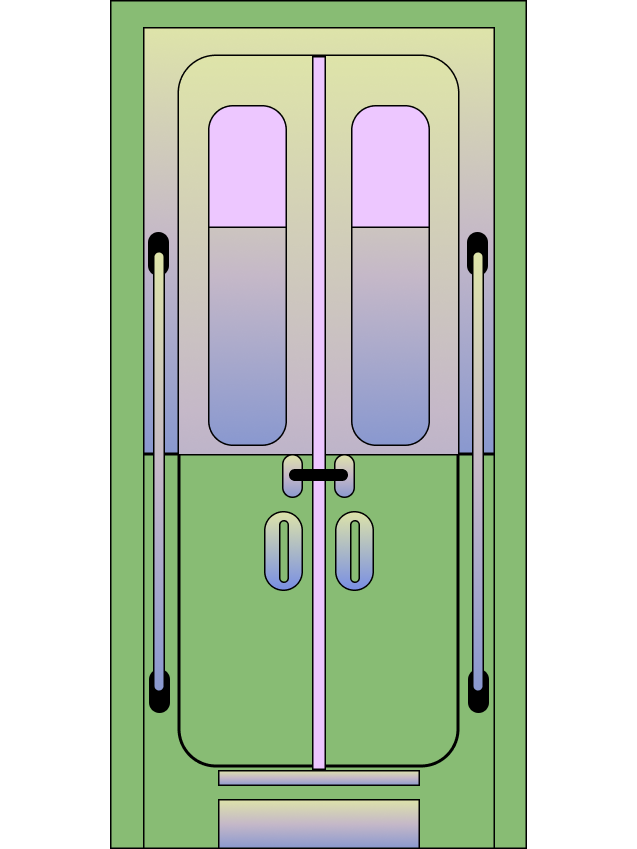
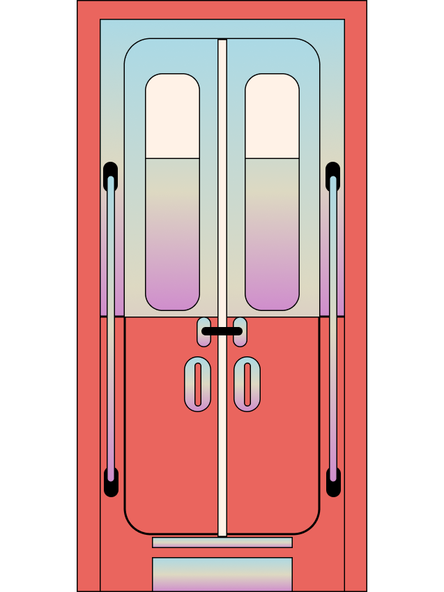
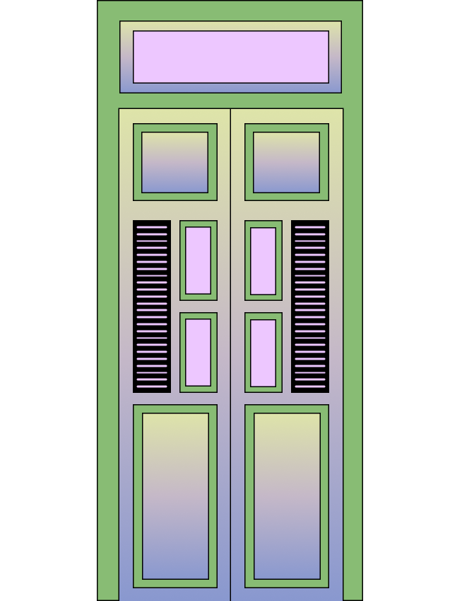
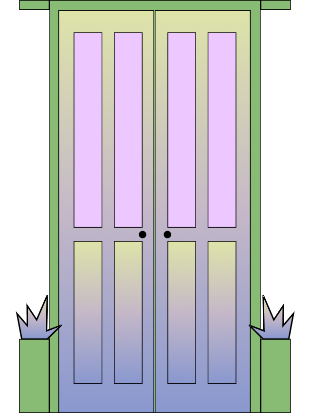
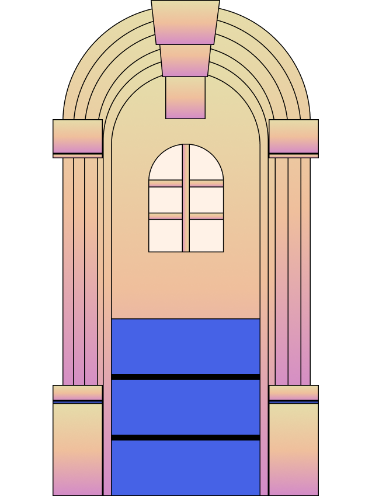
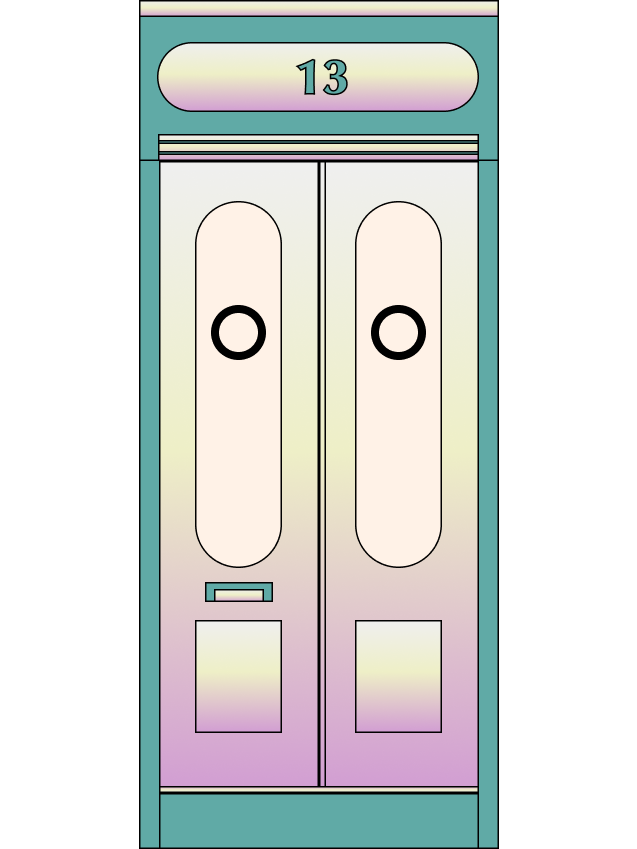

The Door of Wish

The Door of üç¶

The Door of Slow Slow Bus
The Door of Anywhere

The Door of Healing
The Door of Sherlock’s Adventure
The Door of 3L Water
The Door of Happiness

The Door of Home
The Door of Fallen Flower
The Door of Memory

The Door of Waterman
The Door of Lunar Portal

The Door of Wish
The Door of üç¶

The Door of Slow Slow Bus
The Door of Anywhere
The Door of Healing
The Door of Sherlock’s Adventure
The Door of 3L Water
The Door of Happiness
The Door of Home
The Door of Fallen Flower
/about/
Anywhere Door Collection is a virtual public space that treasures and shares stories of place. Through an interactive digital landscape that transports viewers to crowd-sourced locations revealed behind random doors, this project channels the desires, hopes and memories of others, and features specific sites of longing.
If you could use a hypothetical “anywhere door” to transport yourself to any place you choose, where you would like to go?